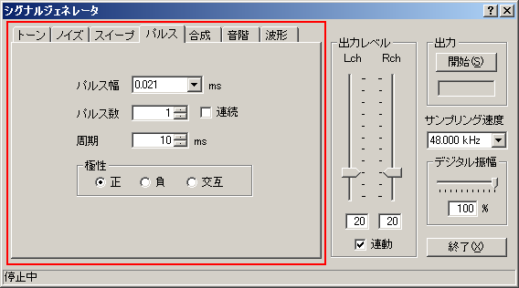
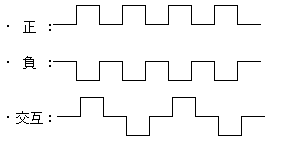
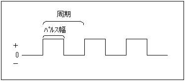
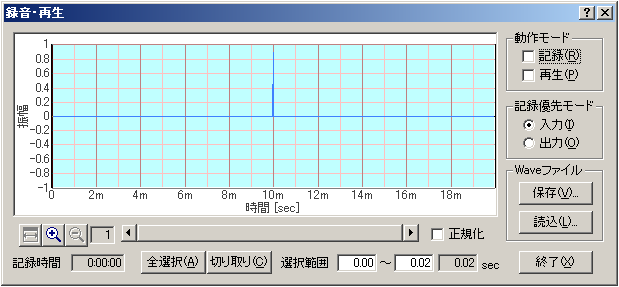
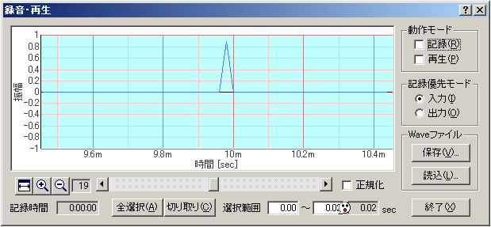

DSSF3 > RA > リファレンス > シグナルジェネレータ
パルス
『パルス』設定項目の説明

| 項目 |
説明 |
| パルス幅 |
パルス幅をms単位で設定します。 |
| パルス数 |
出力するパルスの回数を入力します。[連続]をチェックすると、停止ボタンをクリックするまで出力し続けます。 |
| 周期 |
周期をms単位で設定します。 |
| 極性 |
波形の極性を設定します。

|
＊パルス波について

レコーダー
上のパルスの操作画面で、パルス幅は 0.023ms です。これは23/1000000秒の短いパルスです。パルス数は1ですから、また発生間隔は10msです。また極性は正ですから、レコーダーの録音をチェックしておいて、シグナルジェネレーターのパルスをスタートすると、レコーダーは測定の開始から終了までを測定自動録音します。下の画像は測定結果です。開始から10msで、正の極性の信号が出力されています。

下の画像はレコーダーのズーム機能を使用して倍率をX軸、時間軸方向に19倍にズームしてあります。1目盛りが1/10000秒です。これで見る限り、最大ボリューム（プラス32767）の非常に短い時間の信号、（インパルス信号）が出力されています。パルス巾を広くすると、方形波のような四角の信号になります。もちろんこのように表示させれば上辺の時間がパルス幅になります。マイナスであれば、マイナス方向（マイナス-327627）の信号が表示されるはずです。正負交互に出力もできます。
このレコーダーの記録は、最初メモリに保存されています。このレコーダの保存機能を使用し、WAVEファイルに保存出力できます。また、その反対に読込み機能でWAVEファイルを読み込んで、再生させて測定を行うことができます。その場合は再生のチェックボックスをチェックしておいて、FFTアナライザやオシロスコープなどをスタートすれば、自動再生測定を行うことができます。
測定の音響信号が、デジタルのままでレコーダがアナログを経由しないので、データの劣化が無く同じ測定結果が、何度でも再現可能です。

DSSF3 > RA > リファレンス > シグナルジェネレータ